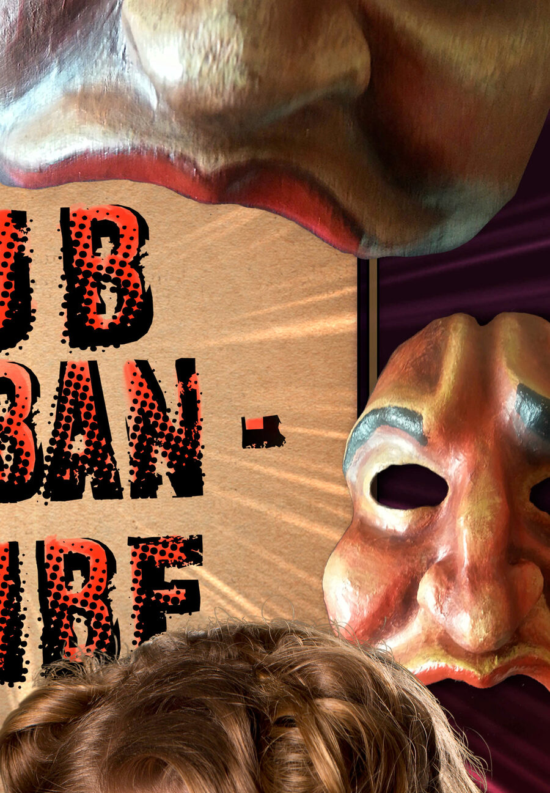

Ok fine, they were ripped off by three thugs in Paris.
Suburban Tribe began as a short mask show and grew into a full-length piece performed nationally and internationally from 2013 to 2015. Flying home from a successful run at the Avignon OFF Festival, Kate's masks, costume, money, and family heirlooms were stolen at the airport.
"It's kind of strange to be doing a show I've spent hundreds of hours on, performed nationally and internationally, unmasked. Until now, it's been a mask show. Now I'm taking the mask off."
As resiliency is one of the show's core themes, Kate had to rebuild, continuing, in real time, the story of transforming tragedy into creation. Suburban Tribe: Unmasked revisited the work without masks: "It feels like new water. Like skinny dipping for the first time. The cool exhilaration of having no barriers. Perfect freedom. Then wondering: why did I ever wear a bathing suit? Or in my case, a mask."
That instinct to keep peeling the story back kept going. Over the following decade, the mask show became a fully-scripted, multi-character solo play, and found its current name: The Play About My Father.